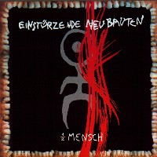

#はじめて聴いたノイバウテンの音がコレです、6年くらい前大学生の頃、八王子の中古屋さんでかかってて(もうツブレましたけど、その店)。呪術的なコーラスと金属を叩く音があんまりかっこ良かったんで聞いてみました。
俺:「何ですかこれ？」
店主:「あいんしゅとぅるつぇんでのいばうてんだよ」
俺:「あいーん？」
なんてやりとりは無かったんですけど、すぐには名前を覚えられませんでした。でもノイズ系に興味行った最初の一枚。
んで、久しぶりに見かけたんで買ってみました。今聴くと....なんていうかダンスミュージックに聞こえる...ってのは言い過ぎかもしれませんが。昔ほどの衝撃はやっぱ無いんですけど、(とりあえず自分にとっては)80年代ノイズの雰囲気そのままな一枚。ザラザラした質感、ジャケの歯茎も含めて好きです。あんまりジャケ好きなんで当社比4倍。(2000.10.21)

- Halber Mensch
- Yu-Gung (Futter mein Ego)
- Trinklied
- Z.N.S.
- Seele brennt
- Sehnsucht (zitternd)
- Der Tod ist ein Dandy
- Letztes Biest (am Himmel)
- Das Schaben
- Sand
SOME BIZZARE: BartCD-331
#渋谷Disk Unionで\800でした、これの元ネタアルバム買ってないけど買っちゃいました。ノイバウテンのリミックスアルバム。1曲目Jon Spencerかっこいいです。たぶんオリジナルの3割増くらいカッコ良いと思う。オリジナル聴いてないけど。他はよく知らない人達です、9曲目はThe Orb関係の人みたい。(1999.3.20)
- Ende Neu (Special Gomez Mix)
remixed by Jon Spencer
- Installation No.1
remixed by Barry Adamson
- NNNAAAAMMM
remixed by Panasonic
- Stella Maris
remixed by Soulwax
- The Garden (The White Chair Mix)
remixed by Alec Empire
- NNNAAAMMM (The Dark Welcome Mix)
remixed by Darkus
- Ende Neu
remixed by Panacea
- Was Ist Ist
remixed and additional insturments by Kreidler
- NNNAAAMMM (Xing Mix)
reconstructed with original materials only by Thomas Fehlmann and Gudrun Gut
- Die Explosion Im Festpielhaus
remiexd by Techno Animal
東芝EMI: TOCP-50358 (1997.9.8,MUTE Records)